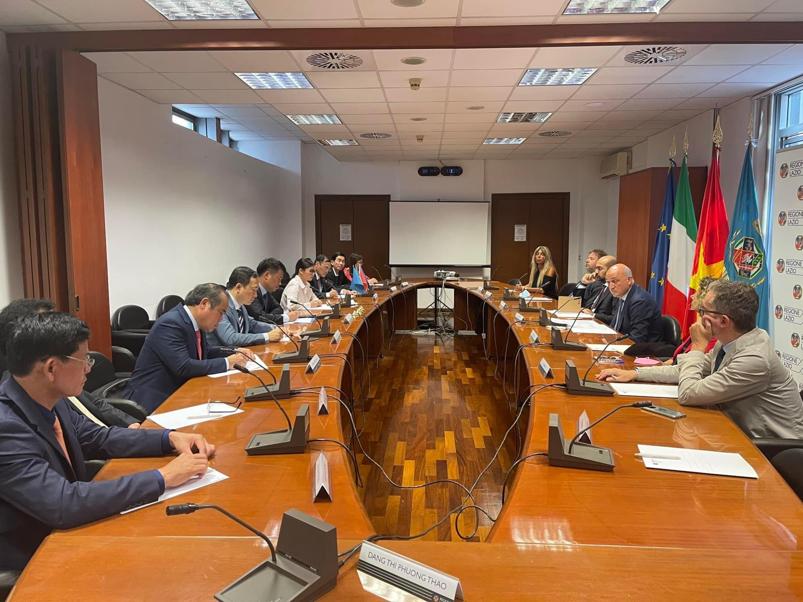
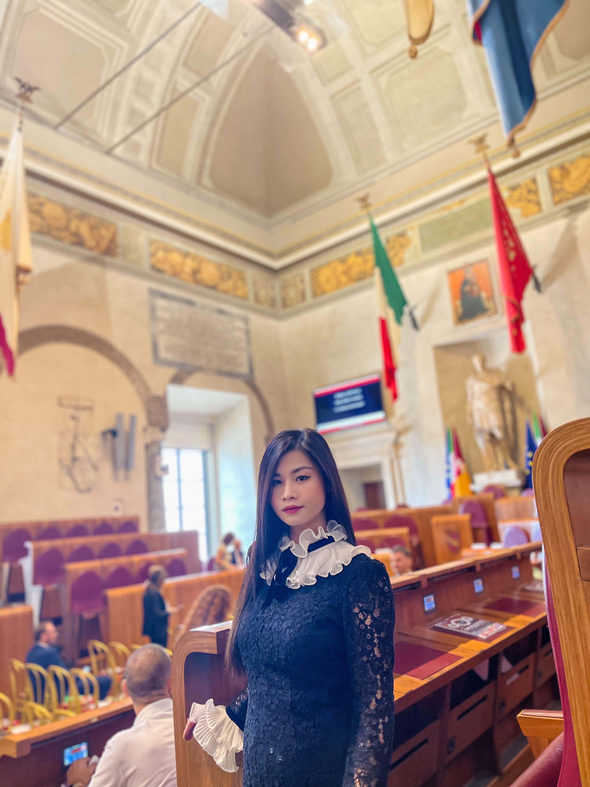
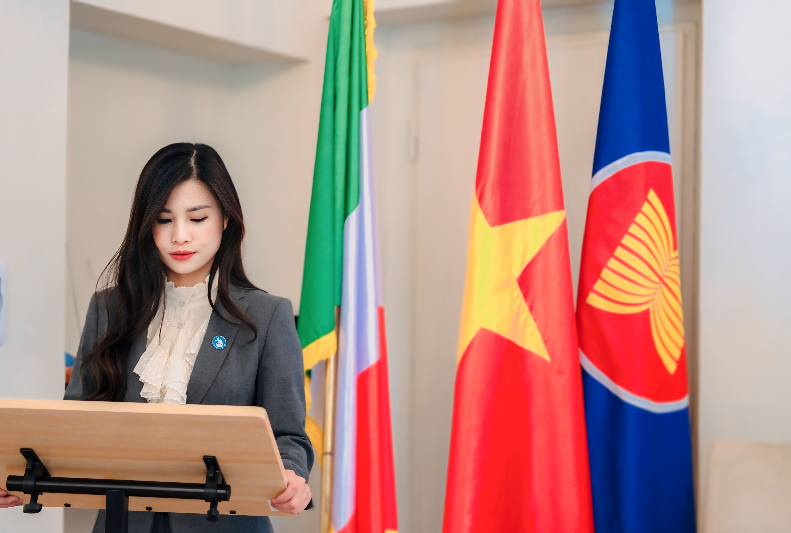
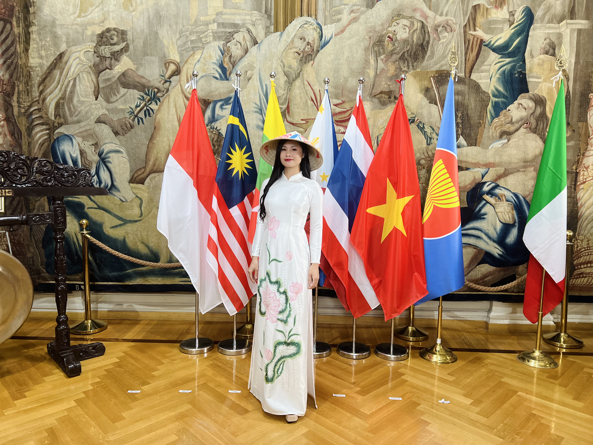

- Borsa di studio completa per il Master presso l'Università di Tor Vergata.
- Certificazione Thomson Reuters con eccellenza durante il percorso di studi magistrale.
- Terzo premio nel concorso LAVAZZA.
- Premio speciale nel concorso " Essenza del Vietnam".
- Attestato di merito dall'Ambasciata del Vietnam in Italia per il contributo alla comunità.
Esperienza:
- Segretaria dell'Associazione degli Imprenditori Vietnamiti in Italia (ASSOEVI) – Coinvolto nell'organizzazione di numerosi eventi per favorire il networking tra le imprese.
- Segretaria dell'Associazione dei Giovani Imprenditori Vietnamiti in Europa (EVIYBA) dal 2016 – Ampliando le relazioni con numerosi imprenditori e organizzazioni internazionali.
- Vicepresidente dell'Associazione degli Studenti Vietnamiti in Italia (ASVI) – Attivamente impegnato nella promozione di iniziative dedicate agli studenti vietnamiti.
- Presidente dell'Associazione degli Studenti Vietnamiti in Italia per il mandato 2021-2023, rieletta per il mandato 2023-2025 Guidando la comunità studentesca attraverso numerosi progetti concreti e creando un ponte tra gli studenti vietnamiti e le istituzioni in Italia.
Esperienze professionali e leadership
Fin dal mio arrivo in Italia, ho partecipato attivamente alle organizzazioni della comunità vietnamita nel paes, ricoprendo diversi ruoli di responsabilità:


Ho avuto l'onore di essere l'unica giovane rappresentante della comunità vietnamita in Italia a intervenire all'incontro con il Primo Ministro Phạm Minh Chính il 4 novembre 2021, nonché di rappresentare l'Associazione degli Studenti Vietnamiti con un discorso ufficiale davanti al Presidente della Repubblica del Vietnam, Võ Văn Thưởng, il 25 luglio 2023. Inoltre, ho partecipato al XI Congresso Nazionale dell'Associazione degli Studenti Vietnamiti (18-20 dicembre 2023) come delegata per l'Italia.




Riconoscimenti e premi
Visione e obiettivi
Il mio obiettivo è creare una comunità professionale di traduttori e interpreti di lingua italiana, condividendo esperienze di studio e lavoro in Italia, oltre a supportare gli studenti e le imprese vietnamite nell'integrazione nel contesto europeo. Sono inoltre appassionata di progetti sociali, collaborazioni internazionali e iniziative volte a rafforzare il legame tra Vietnam e Italia. Se siete interessati alla traduzione, al commercio internazionale o semplicemente volete scoprire di più sulla vita e sulle opportunità in Italia, connettiti con me!